Inofficiell fanrekonstruktion · Stunt GP © 2001 Team17 Software Ltd.
Team17:s klassiska racingspel med radiostyrda bilar — återuppbyggt ur originalspelets kod och körs direkt på Windows x64 med DirectX 12.
Originalets menyer, modeller, texturer, musik och ljudeffekter. Hela enspelarspelet i bredbild, med bildinterpolering upp till skärmens uppdateringsfrekvens.
TRYCK PÅ RETUR FÖR ATT FORTSÄTTA
- Takt 60steg/s som i originalet, oberoende av skärmens uppdateringsfrekvens
- Tick 3–5ms ett helt spelsteg inklusive ritning (upphovspersonens mätning)
- Start 6bilar spelaren och fem AI-styrda motståndare
- Bild Hor+ alla bildformat, utan svarta kanter och utan utsträckning
Originalspelet. En ny, inbyggd motor.
Stunt GP är ett racingspel med radiostyrda bilar på banor fulla av ramper, hopp och kraftigt doserade kurvor. StuntGP NEW återskapar hela vägen genom spelet: språkval, titelskärm, menyer, namninmatning, val av läge, fordon och bana, loppet, resultaten och återkomsten till menyn — allt i en sammanhängande spelvärld.
Det är varken en emulator eller ett skal runt den gamla EXE-filen. Körmekanik, kontakt med banan, motståndarnas AI och kameran är ny inbyggd kod, återuppbyggd utifrån originalprogrammets instruktioner. Spelet använder originaldata: modeller, texturer, typsnitt, musik och effekter.
Där originalets beteende ännu inte har återskapats rapporterar spelet ett tydligt fel med funktionens namn — i stället för att ersätta det med en påhittad ”leksaksmodell” för körningen.


Lägen från originalspelets meny. Namn och hjälptexter kommer direkt från den svenska versionen i spelfilerna.
Troget originalet, bekvämt på en modern dator
Originalmenyer
Språkval, titelskärm, huvudmeny, namninmatning, fordonsval och banförhandsvisning körs med spelets originalgrafik, typsnitt och texter.
Ett sammanhängande spel
Meny → bana och läge → lopp → resultat → meny. Allt sker i en spelvärld, utan något separat förhandsvisningsläge.
60 steg per sekund
Simuleringen går i originalets takt: 60 steg per sekund, oberoende av skärmens uppdateringsfrekvens. Ett spelsteg inklusive rendering tar cirka 3–5 ms.
Alla skärmar
Bilden fyller fönstret i inbyggd upplösning, utan svarta kanter och utan utsträckning. Loppen använder Hor+ — mer sikt åt sidorna med originalets vertikala synfält. HUD:en håller sig vid skärmkanterna.
120, 144, 240 Hz
Bildinterpoleringen ger mjuk rörelse upp till skärmens uppdateringsfrekvens, med takten låst till skärmen. Själva spelet håller 60 steg per sekund, så inga knapptryckningar försvinner och musik och laddningsskärmar behåller originalets tempo.
Originalfiler
Modeller av fordon och banor, texturer, typsnitt, musik och ljudeffekter kommer från originalspelets filer.
Återskapat, inte påhittat
Varje återskapat beteende måste hänvisa till konkreta instruktioner i den fastlåsta ursprungliga EXE-filen. Pseudokod från dekompilatorn räknas inte ensam som bevis.
Originalets buggar åtgärdade
11 dokumenterade rättelser, beskrivna separat från det återskapade beteendet — till exempel ett halvsekundslångt stopp ungefär var sjunde minut, orsakat av att en 32-bitars klockräknare slår runt.
Riktiga skärmbilder från spelet
Alla bilder är skärmbilder från version R1, tagna ur en spelinspelning från 2026-09-30 — utan retusch och utan skisser. Spelet körs i bredbild: lopp, menyer och resultat fyller hela 16:9-bilden.
-
Lopp vid havet R1
-
Stuntbonus: 250 R1
-
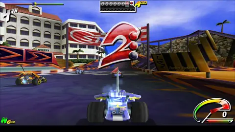
Nedräkning R1
-
”GO” — trickstart R1
-
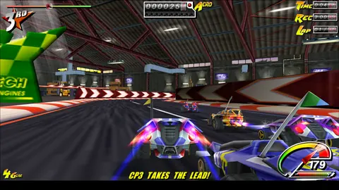
Lopp i hangaren R1
-
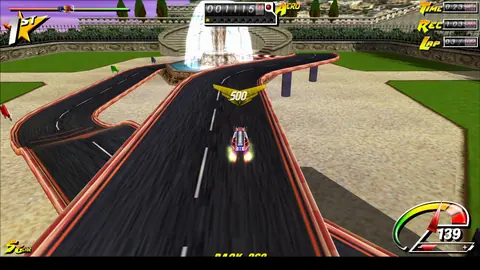
Stuntbonus: 500 R1
-
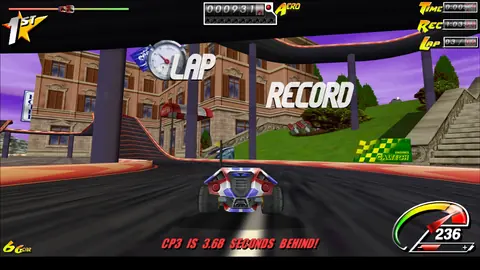
Varvrekord R1
-
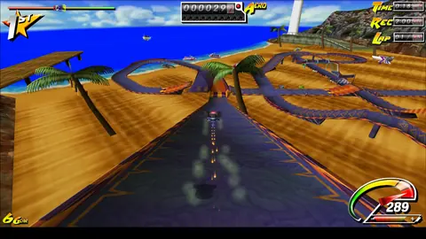
Strandbanan R1
-
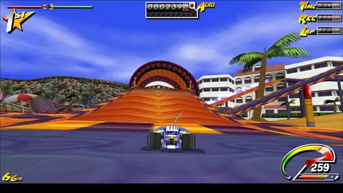
Mot loopen R1
-
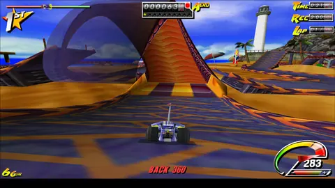
Stunt: BACK 360 R1
-
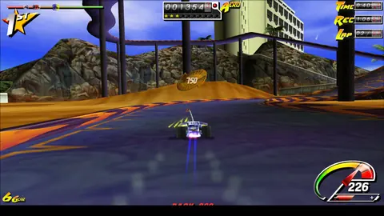
Stuntbonus: 750 R1
-
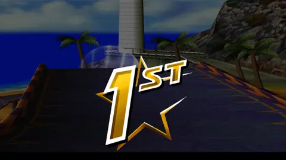
Mål — etta R1
-
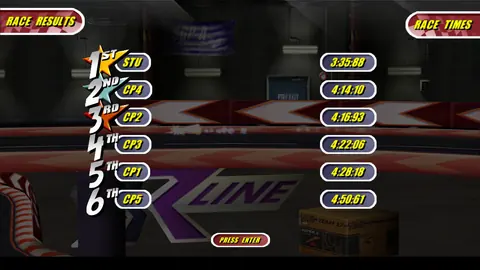
Loppresultat R1
-
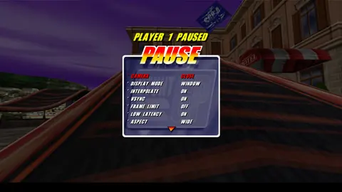
Paus — ADVANCED R1
-
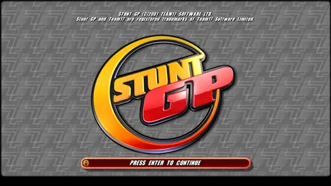
Titelskärm R1
-
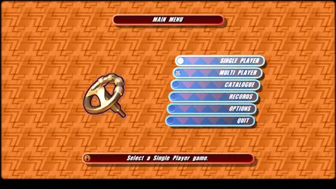
Huvudmeny R1
-
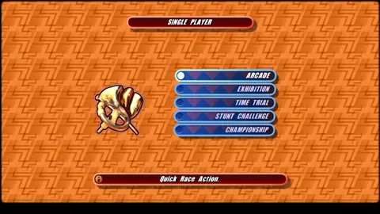
Enspelarlägen R1
-
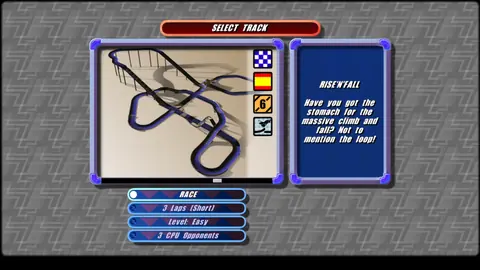
Banval R1
-
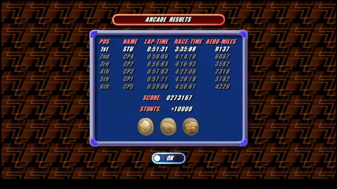
Arkadresultat R1
-
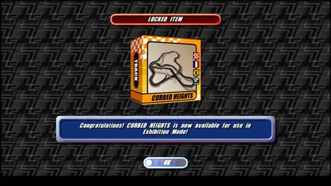
Upplåst bana R1


Stallen och deras maskiner
Så här ser fordonsvalet ut i R1 — nedan fem exempelbilar från tre av stallen. Varje bil har egna värden för STUNT, GRIP och POWER och en beskrivning från originalspelet.

1 / 5
The Brute
Wild Wheels
”Ren råstyrka på vägen!”
Redo för start?
- Fil
StuntGP_NEW-R1-program.zip- Storlek
- 2,2 MB (2 314 032 byte)
- Uppackat
- 4,9 MB, 6 filer
- SHA-256 (ZIP)
f9ff010cbe5c14cf920af58bcee4f7f1ffbe364548f92c1d7e771c45f1da537a- SHA-256 (StuntGP_NEW.exe)
17d884df278ff3df0f59e0d4f1bd629ca481f62c6b561247d635c979b8c1ab9c
Kontrollsummor: SHA256SUMS.txt. Kontrollera i PowerShell:
Get-FileHash .\StuntGP_NEW-R1-program.zip -Algorithm SHA256
Systemkrav
- Windows 10 eller 11, 64-bitars
- Grafikkort med DirectX 12 (funktionsnivå 11_0 eller högre)
- Microsoft Visual C++ Redistributable 2015–2022 (x64) — ladda ner från Microsoft
- Ett eget exemplar av originalspelet Stunt GP (cd eller installation) — filerna medföljer inte
- Tangentbord
Paketets innehåll
StuntGP_NEW.exespelet (x64, DirectX 12)START.cmdstartar speletSTART-MENU.cmdstartar spelet (samma som START.cmd)README.txtinstruktioner (PL/EN)data\retail\startkonfiguration; kopiera originalspelets filer hitsave\card00\mapp för sparade inställningar
-
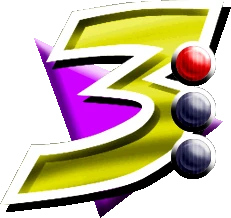
Ladda ner
Ladda ner arkivet
StuntGP_NEW-R1-program.zipoch jämför för säkerhets skull dess SHA-256-kontrollsumma. -
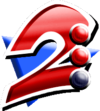
Packa upp
Packa upp arkivet på en plats där du har skrivbehörighet, till exempel skrivbordet. Kopiera mapparna
wads, graphics24, meshdata, soundfrån ditt eget exemplar av Stunt GP tilldata\retail. -
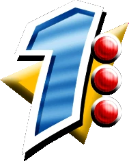
Starta
Dubbelklicka på
START.cmd. Om en SmartScreen-varning visas väljer du ”Mer information” → ”Kör ändå”. -
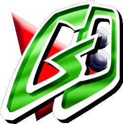
Spela!
Välj menyspråk vid första starten. Tryck på ENTER på titelskärmen, välj SINGLE PLAYER, ett läge och ett fordon — och kör ut på banan.
Tangenter och startalternativ
På banan
- ↑Gasa
- ↓Bromsa
- ←→Styra
- ESCPaus under loppet
I menyerna
- ↑↓←→Välja alternativ
- ENTERBekräfta
- A–ZSkriva in spelarnamnet
Tangentbordets standardlayout kommer från originalspelets data. MELLANSLAG, SKIFT och CTRL sköter originallayoutens extra funktioner.
Startalternativ StuntGP_NEW.exe
| Alternativ | Funktion |
|---|---|
--interpolation | Slår på bildinterpolering för den här sessionen (--no-interpolation stänger av den). Normalt ställer du in den under Options → GRAPHICS → INTERPOLATE. |
--aspect-4x3 | Originalets 4:3-bild med svarta kanter, som ASPECT → ORIGINAL i grafikinställningarna. Miljövariabeln SGN_ASPECT=4x3 gör samma sak. |
--width 1280 --height 720 | Fönsterstorlek (1440×900 som standard). |
SGN_GPU_WORLD=1 | Miljövariabel: bangeometrin beräknas på GPU:n. Valfritt, avstängt som standard. |
De flesta inställningar behöver inte längre startalternativ: visningsläge (fönster, kantlöst eller exklusiv helskärm), interpolering, VSync, bildgräns, kantutjämning, texturfilter och mer finns under Options → GRAPHICS, och under loppet under ADVANCED i pausmenyn.
StuntGP_NEW.exe --interpolation --aspect-4x3
Ärligt om vad som är klart
Fungerar i R1
- Hela enspelarspelet: Arcade, Exhibition, Time Trial, Stunt Challenge och Championship
- Språkval, titelskärm, menyer, namninmatning, val av fordon och bana
- Lopp mot fem AI-motståndare: start, varv, stunts och bonusar, mål, resultat, topplistor och upplåsningar
- Musik och alla ljudeffekter, HUD, kamera, pausmeny, partiklar, spår och skuggor
- Bredbild, grafikinställningar, visningslägen och bildinterpolering upp till skärmens uppdateringsfrekvens
Pågår
- Flerspelarläget finns inte i R1 — det kommer att utformas från grunden som ett separat nätverksläge
- Full överensstämmelse i bild och speltillstånd med originalet är ännu inte bevisad
- R1-bygget kontrollerades med upphovspersonens visuella tester och mätningar; automatiska tester och jämförelser med originalet kördes inte för det
Utgåva
-
R1 2026-09-30
Den första offentliga versionen
R1 är den första offentliga utgåvan av StuntGP NEW. Den innehåller:
- Hela enspelarspelet — alla fem lägen, från Arcade till Championship
- Musik och alla ljudeffekter
- Bredbild: bilden fyller varje fönster, med Hor+ i loppen
- Bildinterpolering upp till skärmens uppdateringsfrekvens, med takten låst till skärmen
- Grafikinställningar och visningslägen: fönster, kantlöst och exklusiv helskärm
- Kraschen vid avslut är åtgärdad, och menyerna hackar inte längre
Så görs det
Ur instruktioner, inte gissningar
Återskapat beteende måste hänvisa till den fastlåsta EXE-filen (SHA-256), den dekompilerade funktionen och de exakta instruktionsintervallen. Dekompileringen är inte den ursprungliga källkoden.
Jämförelser med originalet
Orakel kör originalets oförändrade instruktioner i emulatorn Unicorn och jämför resultaten med den nya koden — till exempel rutinerna för att pausa och återuppta spelet: 13 280 jämförda anrop utan skillnader.
Stränga byggen
C++23, kompilerat med
/W4 /WX— varningar räknas som fel — och/fp:strictför strikt flyttalsaritmetik.Ny plattform, tydligt märkt
Fönstret, DirectX 12-renderaren, bildskalningen och presentationstakten är ny kod — märkt som ny, inte som återskapat spelbeteende.
Vanliga frågor
Är detta det officiella spelet?
Nej. StuntGP NEW är ett inofficiellt fanprojekt utan koppling till Team17 Software Ltd. Stunt GP och Team17 är registrerade varumärken som tillhör Team17 Software Limited.
Är det en emulator eller ett skal runt den ursprungliga EXE-filen?
Nej. Det är ett inbyggt x64-program, nyskrivet i C++23 med en DirectX 12-renderare. Den ursprungliga körbara filen startas inte — den fungerar som förlaga som spelets moduler återskapas ur.
Är spelet färdigt?
Enspelarspelet är komplett i R1: alla fem lägen, musik och ljudeffekter, resultat, topplistor och upplåsningar. Flerspelarläget finns inte ännu — det kommer att utformas från grunden som ett separat nätverksläge. Full överensstämmelse med originalet är ännu inte bevisad.
Windows visar en varning när jag startar
StuntGP_NEW.exe är inte digitalt signerad, så SmartScreen-filtret kan blockera den. Välj ”Mer information” → ”Kör ändå”. Jämför för säkerhets skull den nedladdade filens SHA-256-kontrollsumma med värdet i avsnittet Ladda ner.
MSVCP140.dll eller VCRUNTIME140_1.dll saknas
Installera Microsoft Visual C++ Redistributable 2015–2022 (x64) från Microsofts webbplats: aka.ms/vs/17/release/vc_redist.x64.exe.
Fungerar det på en skärm med 144 Hz eller 240 Hz?
Ja. Spelet räknar 60 steg per sekund oavsett skärmens uppdateringsfrekvens, och bildinterpoleringen (Options → GRAPHICS → INTERPOLATE) visar mjuk rörelse upp till skärmens uppdateringsfrekvens, med takten låst till skärmen.
Jag har en ultrabred skärm
Bilden fyller hela fönstret utan svarta kanter, och loppen visar mer sikt åt sidorna (Hor+). Om du hellre vill ha originalets 4:3-utsnitt ställer du ASPECT på ORIGINAL i grafikinställningarna eller startar spelet med alternativet --aspect-4x3.
Finns spelmenyn på svenska?
Ja. Vid första starten kan du välja svenska — ett av de sju språken i originalspelets data: engelska, nederländska, tyska, svenska, italienska, spanska och franska.
Var sparar spelet inställningarna?
I mappen save\card00 bredvid StuntGP_NEW.exe. Packa därför upp spelet på en plats där du har skrivbehörighet — till exempel skrivbordet, inte Program Files.
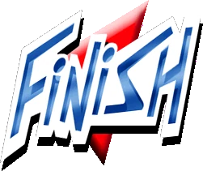
Version R1 väntar vid mållinjen
Ladda ner, packa upp, kör START.cmd — och tävla på originalbanorna i Stunt GP.